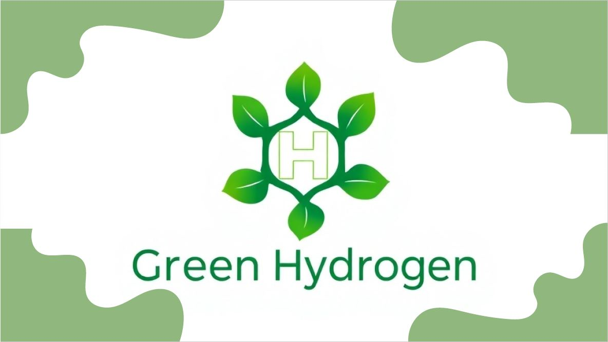

Bienvenid@ al blog de un docente al que le gusta trabajar más de lo que debiera.
En las diferentes entradas, que inicialmente tienen una periodicidad mensual, puedes enterarte cómo me organizo y a qué dedico el tiempo laboral/profesional para la preparación de los materiales, así como las diferentes actividades y proyectos en los que me veo envuelto.
Lo de la periodicidad mensual está difícil este curso. Casi tenía la entrada para el día 1, las ideas escritas y algo del ocio, pero entre unas cosas y otras no sacaba tiempo para cerrarla, así que aquí estamos, casi a mitad de mes y a las puertas de las vacaciones.
Marzo ha sido un mes agridulce...Sin entrar en detalles, a modo de reflexión, qué importante es que haya un buen clima de centro, con una comunicación abierta entre toda la comunidad y se escuchen las opiniones de todos. Hay momentos en la vida en los que te planteas si todo el esfuerzo vale la pena, y por suerte, tener buenos compañeros y amigos son imprescindible para no tirar la toalla.
Febrero siempre es un mes corto, pero que da para mucho. Tras la vuelta de navidad, cogemos la velocidad de crucero, y las rutinas ayudan a la productividad...
Respecto a la EOI y el C2 de Valenciano, llegan buenas noticias. Este mes hice los exámenes parciales, y todo va bien. Un 8 de media y con muy buenas sensaciones... Ya me he matriculado en las pruebas de certificación de mediados de mayo. Probablemente sea el objetivo número 1 de este curso, y pinta bien.
Tras acabar el bloque de Hadoop, este mes he tenido pocas sesiones de IABD (este mes está más centrado en Redes Neuronales y PowerBI que imparten mis compañeros), pero aún así hemos empezado el bloque de Spark. Este curso definitivamente ya no he impartido nada de RDD, y no es que no lo considere importante, ya que permite aprender a utilizar las funciones lambda en Python y sirven para entender cómo funciona por debajo la computación distribuida, pero con las pocas horas que tenemos, por algún lado hay que recortar.
En marzo termino el bloque de Spark y ya nos centramos en el PIIAFP Lara hasta final de curso. El próximo bloque tecnológico será el de Flujo de datos en streaming, pero eso será ya en mayo.
Este mes ha salido la noticia de que el gobierno va a crear una nueva familia profesional asociada a la IA y Data, y la verdad, más que una familia, hacen falta ciclos formativos de grado superior más específicos. Digo de grado superior porque en un sólo curso es muy difícil absorber todo el ecosistema, y digo específicos, por casi lo mismo, muchos campos y tecnologías que aunque casi siempre van de la mano, hay bloques muy concretos de IA o de Data que se quedan en el tintero por falta de tiempo.
El PIIAFP Lara sigue adelante. Tuvimos una ponencia muy interesante de José Barragán, nuestro abogado especialista de derecho digital, subimos los cambios trabajados durante la primera evaluación a la aplicación de captura, y mis compañeros de Alicante, Sevilla y Mérida van a realizar unas jornadas de transferencia de conocimiento en Mérida a mitad de mes. Nosotros, esta vez, hemos preferido quedarnos en casa, y vamos a intentar ir a Mérida para finales de mayo, cuanto tengamos el curso y el proyecto más avanzando. Otro aspecto a destacar es que ya hemos organizado el flujo de trabajo con Convotis para introducir MLOps en el proyecto y automatizar los procesos de entrenamiento y despliegue.
Relacionado con Lara, nos han invitado a participar a primeros de abril en una jornada organizada por el CEFIRE de Servicios Socioculturales y a la Comunidad, donde presentaremos el proyecto y daremos unas nociones y recomendaciones sobre IA. Ya os contaré qué tal.
En el PIIAFP del Hidrógeno Verde, estuvimos en Villena en el IES Navarro Santafé, en una jornada de transferencia de conocimiento entre Robótica e IA y Big Data, conociendo mejor cómo podemos colaborar. Hicimos un webinar con los compañeros del CPIFP Profesor José Luis Graiño (Palos de la Frontera) y pasamos un día de aprendizaje muy provechoso. A finales de mes volveremos a juntarnos para ver qué datos y parámetros almacenamos para su posterior monitorización.
Ya casi hemos impartido la mitad de la unidad de Programación mediante PL/SQL, y estoy terminando de escribir los apuntes sobre Triggers y Cursores. Cosas que he aprendido y no sabía: uso de eventos en MariaDB y gestión de errores mediante señales. En ello estoy, añadiendo nuevas secciones y actividades.
Marzo será el último mes completo de clase...luego entre vacaciones y dual, veremos cómo conseguimos que el alumnado coja un ritmo adecuado.
El colchón que tenía entre los apuntes ya escritos y el ritmo de clase se va reduciendo. A día de hoy, según mi planning, llevo una semana de ventaja... A ver si consigo mantenerla hasta finales de marzo, que luego entre las vacaciones y la dual, tendré tiempo de repensar bien cómo impartir el bloque de NoSQL con MongoDB.
El deporte mínimo para ser persona. Pero como punto positivo, he vuelto a la piscina. Dolores de hombro y espalda aparte, me sentí muy bien al día siguiente. Esta semana dan lluvia, así que volveré a cambiar la bici por la piscina.
Si el mes pasado fue Dover, este mes ha tocado Ocean Colour Scene, otra banda que quemé en su día y que siempre me gusta reescuchar.
En cuanto al ocio digital, un mes completo. Para hacerlo más conciso y en forma de lista, lo más destacable:
Cine: En familia nos gustó El 47 (Movistar+). Mi película del mes es Civil War (Movistar+), que aunque ya tiene un añito, es un peliculón. En varias sesiones vi Venom: el último baile que parece que es el fin de esta trilogía (lo del baile da vergüenza ajena), y realmente espero que no hagan más ... a no ser que seáis completistas como yo, podéis dedicar dos horas de vuestra vida a algo mejor, seguro. Otra palomitera que disfruté más fue Transformers: El despertar de las bestias (Netflix) y con Andreu fuimos al cine a ver Policán, fueron los primeros libros con lo que se aficionó a la lectura.
Videojuegos: En la medio olvidada PS5, por fin me he centrado en Assassin's Creed Mirage y ya lo he acabado... de la historia, poco me he enterado. Todos los nombres se me mezclan. Eso sí, Bagdad tiene su encanto. En la Xbox compaginando dos juegos cortitos, por un lado el precioso Gris y por el otro, el gracioso Donut County, y hace un par de días probé Balatro y entiendo que puede enganchar mucho.
Marzo es un mes de noticias importantes. La semana que viene se publica el listado provisional del concurso de traslados, y veremos cuant@s compañer@s nuev@s tenemos. Han salido 7 vacantes y además, 3 compañer@s que quieren partir para estar más cerca de casa. En resumen, si somos algo más de 40 docentes en el departamento, tendremos una cuarta parte de novedades.
A nivel formativo, me han confirmado en los cursos que os comenté (uno sobre Digitalización (nuevo módulo profesional en 2º) y otro sobre Programaciones Didácticas con la nueva ley de FP), que empiezan la semana que viene. Os daré mis impresiones el mes que viene.
Nos leemos el mes que viene.
Tras acabar el bloque de NoSQL y Cloud antes de navidades, y finalizando también la primera fase del PIIAFP Lara, en enero hemos empezado el bloque de Hadoop, y las primeras sesiones del PIIAFP de Hidrógeno Verde (nos podéis seguir en Instagram en proyecto_h2), donde vamos a monitorizar una instalación de un electrolizador que generará hidrógeno alimentado por placas solares (de ahí el término hidrógeno verde, ya que no genera ningún tipo de emisión contaminante durante el proceso de producción), y analizaremos los valores para optimizar su producción.

Hidrógeno Verde
A nivel de apuntes, nada nuevo bajo el sol de IABD. Creo que los materiales ya están muy sólidos, y salvo alguna errata y reescritura de alguna explicación, se quedan como están.
Justo antes de vacaciones terminamos de ver las consultas SQL de varias tablas tanto con joins internas como externas. A la vuelta, entramos de lleno con las consultas agregadas y luego las subconsultas. Este pasado viernes hicimos el examen de DDL/DML/DQL y, a priori, el alumnado acabó con buenas sensaciones.
Una pena que el año que me decido a dar el módulo y crear materiales, sea el del comienzo de la nueva ley de FP y la dual. Esas semanas que se van a la empresa (veremos si les aporta algo ir poco más de tres semanas en primero) me vendrían de perlas para no ir tan rápido y poder consolidar aún más las consultas, que sé que si se aprenden bien desde un inicio, es un conocimiento que se queda para toda la carrera profesional.
Ya casi tengo listo la siguiente unidad sobre DCL y TCL (transacciones)... sigo repensando las actividades de transacciones y niveles de aislamiento. Esto lo controlaba menos, y llevo una semana leyendo y haciendo pruebas. Todo para una sesión lectiva, pero ya que me pongo, me pongo.
Con el año nuevo y los buenos propósitos, hemos empezado haciendo algo más de deporte, pero he intentado salir dos veces a correr (20 minutos) y luego me tiro tres días medio cojo. Me tengo que hacer la idea de ir al traumatólogo, y probablemente, volver a operarme... algo en la rodilla no está bien. Con la bici, un día salí con Pedro por una vía verde entre Guardamar y Orihuela, y la verdad, nos lo pasamos bien.
Aunque no he ido a ningún concierto este mes, sí que quería dejar constancia de un par de cosas... He vuelto a escuchar, de forma recurrente, Sister, el primer disco de Dover, y el rollo grunge inicial me moló mucho en su día, y hoy me sigue encantando.
En cuanto al ocio digital, para hacerlo más conciso y en forma de lista, lo más destacable:
Videojuegos: Creo que no podía empezar mejor el año videojuerguil que con el gran Indiana Jones y el Gran Círculo, el cual me ha encantado, haciendo muchas de las tareas secundarias. Este mes estoy compaginando Assassin's Creed Mirage (que esta vez ya lo estoy jugando de forma regular), con un RPG corto. Me he decidido por The Outer Worlds, que había leído varias críticas positivas, tanto por el tono, la temática y la duración. De momento bien.
El mes comienza bien. El próximo viernes nos vamos a Villena con el grupo de IABD a una jornada de transferencia de conocimiento dentro del marco del PIIAFP de Hidrógeno Verde.
Además, tendremos la evaluación de mitad de curso de IABD, y compaginaremos el PIIAFP con el bloque de Spark. En BD, llega el final del 2º trimestre, donde empezaremos el bloque de PL/SQL.
También me he apuntado a un par de cursos de formación del CEFIRE, uno sobre Digitalización (nuevo módulo profesional en 2º) y otro sobre Programaciones Didácticas con la nueva ley de FP.
A modo de cierre anual, un pequeño resumen de lo mejor a nivel de ocio de este 2024.
Si me habéis ido leyendo, ha sido un año donde he trabajado más de lo que me hubiera gustado, y le he dedicado mucho menos tiempo al ocio y al deporte que otros años, pero bueno, estamos en ello.
Fin de la primera evaluación. El primer trimestre suele ser el más duro. Por lo que dura, por el hecho de afrontar nuevos módulos profesionales. Nuevo alumnado. Nuevos proyectos.
Los primeros días de vacaciones sirven para recuperar ritmos de sueño y vida más sanos. Menos preocupaciones, menos madrugones y algo de tiempo para parar, pensar, reflexionar y organizar las ideas. Y que mejor que dejarlo por escrito.